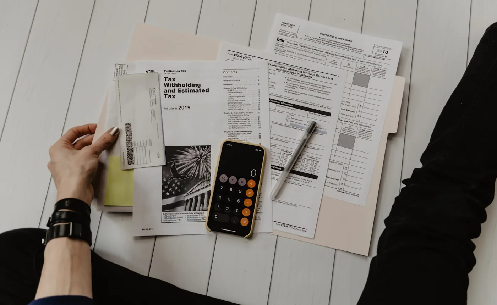

Thị trường căn hộ Thuận An đang có nhiều sản phẩm với cách định vị, diện tích và chính sách thanh toán khác nhau. Trong giai đoạn mở bán, khách hàng thường bị hút vào giá/m², chiết khấu hoặc quà tặng. Nhưng với một quyết định tài sản lớn, điều cần đọc kỹ hơn là tổng chi phí sở hữu và dòng tiền sau ưu đãi. Đây là phần mà một bảng giá đẹp chưa chắc đã nói hết.
1. Giá/m² chỉ là lớp đầu tiên, tổng giá trị căn mới là điểm quyết định
Hai căn hộ có cùng giá/m² nhưng tổng tiền có thể chênh nhau lớn vì diện tích, tầng, hướng, view và loại căn khác nhau. Với khách mua lần đầu, tổng giá trị căn quyết định số tiền phải chuẩn bị, khoản vay ngân hàng, mức trả hàng tháng và khả năng dự phòng. Với nhà đầu tư, tổng giá trị căn quyết định biên lợi nhuận khi cho thuê hoặc bán lại.
Khi xem bảng giá, hãy tạo thêm một cột “tổng vốn cần chuẩn bị trong 12 tháng đầu”. Cột này nên bao gồm tiền đợt đầu, các đợt thanh toán tiếp theo, VAT nếu đã tính, phí bảo trì, chi phí nội thất dự kiến và khoản dự phòng lãi vay. Nếu con số này vượt ngưỡng chịu đựng, căn đó chưa phù hợp dù giá/m² nhìn có vẻ tốt.
2. Chiết khấu phải được quy đổi về tiền thật
Chiết khấu khi thanh toán nhanh, hỗ trợ lãi suất, quà tặng nội thất hoặc ưu đãi phí quản lý đều là yếu tố có giá trị. Tuy nhiên, không nên cộng tất cả lại rồi xem như “lãi ngay”. Cần phân loại rõ đâu là tiền được trừ trực tiếp vào giá bán, đâu là hỗ trợ có điều kiện, đâu là chi phí người mua vẫn phải ứng trước.
Ví dụ, chiết khấu thanh toán nhanh có thể hấp dẫn với người có sẵn tiền mặt, nhưng không phù hợp với người cần giữ vốn dự phòng hoặc đang vay. Hỗ trợ lãi suất giúp nhẹ dòng tiền ban đầu, nhưng rủi ro nằm ở thời điểm hết ưu đãi. Vì vậy, mỗi chính sách chỉ có ý nghĩa khi đặt vào dòng tiền cá nhân của từng người mua.
3. Lịch thanh toán quan trọng không kém giá bán
Một căn hộ giá cao hơn nhưng lịch thanh toán giãn có thể dễ thở hơn căn giá thấp nhưng yêu cầu đóng nhanh. Ngược lại, lịch thanh toán quá nhẹ ban đầu có thể tạo cảm giác dễ mua, trong khi phần áp lực thật xuất hiện khi ngân hàng bắt đầu thu gốc và lãi.
Người mua nên lập ba kịch bản: không vay, vay vừa phải và vay tối đa theo ngân hàng. Trong mỗi kịch bản, tính khoản tiền phải trả theo tháng sau khi hết ưu đãi. Nếu khoản trả vượt vùng an toàn của thu nhập, nên giảm giá trị căn, tăng vốn tự có hoặc chọn phương án thanh toán khác.
Bài đòn bẩy tài chính khi mua căn hộ của KINGMANS có thể dùng làm khung tham khảo trước khi quyết định vay.

4. So sánh giá theo cụm vị trí và trạng thái pháp lý
Thuận An không phải một mặt bằng giá duy nhất. Dự án gần Quốc lộ 13, gần VSIP, gần Aeon Mall, gần ranh TP.HCM hoặc nằm sâu trong khu dân cư sẽ có logic giá khác nhau. Dự án đã bàn giao, đang xây dựng, mới mở bán hoặc chưa đủ hồ sơ pháp lý cũng không nên đặt cạnh nhau một cách cơ học.
Khi so sánh, nên chia thành ba nhóm: dự án đã bàn giao để kiểm tra giá thật và giá thuê thật; dự án đang xây dựng để xem tiến độ và niềm tin thị trường; dự án mở bán mới để đánh giá chính sách và dư địa. Một bảng so sánh tốt phải có ít nhất các cột: vị trí, tổng giá căn, pháp lý, tiến độ, phí quản lý dự kiến, giá thuê tham chiếu và đối tượng mua lại sau này.
Để hiểu thêm tác động của vị trí, có thể đọc bài Quốc lộ 13 và tiềm năng tăng giá bất động sản.
5. Dòng tiền thuê là lớp kiểm chứng cuối cùng cho nhà đầu tư
Nếu mua để đầu tư, giá bán chỉ là nửa đầu của bài toán. Nửa còn lại là căn hộ có cho thuê được không, thuê cho ai, mức thuê ròng bao nhiêu và thời gian trống phòng có thể kéo dài bao lâu. Một căn hộ đẹp nhưng giá thuê không bù được chi phí vốn sẽ cần thời gian nắm giữ dài hơn để chờ tăng giá.
Với Thuận An, lực thuê có thể đến từ chuyên gia, quản lý, kỹ sư, gia đình trẻ và nhóm làm việc giữa Bình Dương - TP.HCM. Tuy nhiên, không phải mọi dự án đều tiếp cận cùng một tệp khách. Dự án có quản lý tốt, tiện ích đủ dùng, kết nối thuận tiện và tổng giá trị căn hợp lý thường có lợi thế hơn khi thị trường cạnh tranh.
Bảng kiểm nhanh trước khi chọn căn
| Câu hỏi | Vì sao quan trọng? | Hành động nên làm |
|---|---|---|
| Tổng giá trị căn là bao nhiêu? | Quyết định vốn tự có, khoản vay và thanh khoản sau này | So sánh tổng tiền thay vì chỉ so giá/m² |
| Lịch thanh toán có phù hợp dòng tiền không? | Giúp tránh áp lực trong 6-24 tháng đầu | Lập bảng dòng tiền theo tháng |
| Pháp lý đã đến bước nào? | Bảo vệ khoản tiền trước hợp đồng mua bán | Đối chiếu 1/500, giấy phép xây dựng, điều kiện mở bán |
| Giá thuê thực tế quanh dự án ra sao? | Kiểm tra khả năng tạo dòng tiền | Khảo sát dự án đã bàn giao trong bán kính 2-3 km |
| Ai sẽ mua lại căn này sau 2-3 năm? | Đánh giá thanh khoản và chiến lược thoát hàng | Ưu tiên layout dễ dùng, tổng tiền vừa tầm, tệp mua lại rộng |
Ứng dụng vào The Emerald Boulevard và nhóm dự án Thuận An
Với các dự án đang được thị trường chú ý như The Emerald Boulevard, người mua nên đặt bảng giá vào cùng một hệ quy chiếu với các lựa chọn khác tại Thuận An. Dự án có thể có lợi thế về vị trí, thương hiệu, tiện ích hoặc chính sách, nhưng quyết định cuối cùng vẫn phải quay về ba câu hỏi: căn này có phù hợp ngân sách không, pháp lý đã đủ mức an toàn chưa, và nếu cần bán lại thì tệp khách nào sẽ mua?
Khách quan tâm riêng The Emerald Boulevard có thể xem thêm checklist mở bán The Emerald Boulevard hoặc landing dự án tại emeraldboulevard.io.vn.
Kết luận: bảng giá là dữ liệu, không phải quyết định
Bảng giá căn hộ Thuận An chỉ thật sự có ý nghĩa khi được chuyển thành bảng dòng tiền, bảng so sánh pháp lý và bảng thanh khoản. Người mua không cần chọn căn rẻ nhất, mà cần chọn căn phù hợp nhất với mục tiêu sở hữu, khả năng vay và kế hoạch nắm giữ.
Ở góc độ cố vấn, KINGMANS ưu tiên những sản phẩm có tổng giá trị hợp lý, pháp lý kiểm chứng được, lịch thanh toán không gây áp lực quá mức và khả năng bán lại cho nhiều nhóm khách. Đây là cách tiếp cận chậm hơn một chút so với cảm xúc mở bán, nhưng an toàn hơn cho một quyết định tài sản lớn.
Câu hỏi thường gặp
Giá/m² thấp có phải căn hộ đó tốt hơn không?
Không chắc. Cần xem tổng giá trị căn, diện tích sử dụng, tầng, hướng, pháp lý, tiến độ và khả năng bán lại. Giá/m² thấp nhưng tổng tiền cao hoặc layout khó dùng vẫn có thể kém hiệu quả.
Nên vay bao nhiêu khi mua căn hộ Thuận An?
Tỷ lệ vay nên phụ thuộc thu nhập ròng và quỹ dự phòng. Nguyên tắc thận trọng là khoản trả nợ sau ưu đãi không làm mất vùng an toàn chi tiêu của gia đình.
Có nên mua trong ngày mở bán để được giá tốt?
Có thể, nếu người mua đã chuẩn bị trước bảng dòng tiền, pháp lý cần kiểm tra và danh sách căn ưu tiên. Không nên ra quyết định trong ngày mở bán khi chưa có dữ liệu nền.